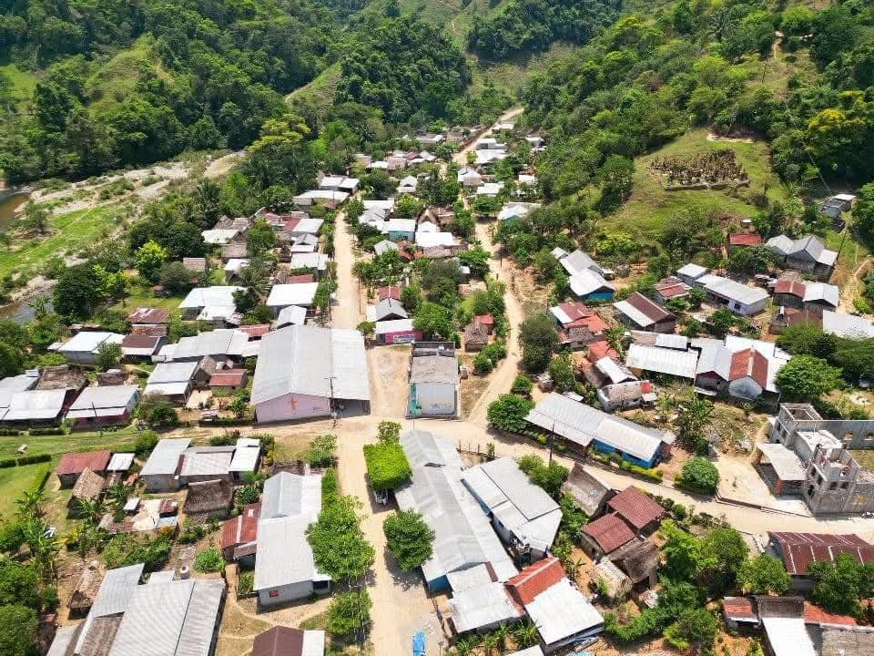

San Pedro Tepinapa Ejidal es una comunidad indígena de Oaxaca ubicada en el municipio de Santiago Jocotepec, dentro de la región del Papaloapan y del territorio cultural de la Chinantla. La comunidad posee una importante riqueza natural debido a su clima cálido y húmedo, sus áreas de vegetación y su diversidad de animales. La agricultura es fundamental para la vida de sus habitantes y permite obtener productos como maíz, frijol, calabaza, chayote y diferentes frutas. Además de su riqueza natural, San Pedro Tepinapa forma parte de una región con una importante herencia cultural chinanteca. Las fiestas, la música, la gastronomía, los huipiles, las artesanías, la medicina tradicional y los conocimientos sobre la naturaleza son elementos que ayudan a mantener viva su identidad. Conocer comunidades como San Pedro Tepinapa permite valorar la diversidad cultural de Oaxaca y reconocer la importancia de proteger tanto el medio ambiente como las tradiciones de los pueblos indígenas.
El significado exacto de Tepinapa no se encuentra claramente documentado pero su nombre está compuesto por “San Pedro”, de origen católico, y “Tepinapa”, un topónimo indígena relacionado con la región chinanteca. Sus coordenadas aproximadas son 17°38'55" de latitud norte y 96°59'15" de longitud oeste, con una altitud de 171 m. San Pedro Tepinapa Ejidal es una comunidad pequeña. Población aproximada de 525 habitantes. Esta cantidad se considera aproximada porque el número de habitantes cambia con el paso de los años.

Imagen tomada de https://www.facebook.com/profile.php?id=61585398706965